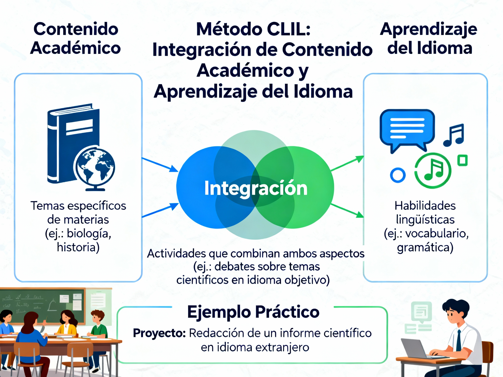

Enseñanza bilingüe mediante el método CLIL
La enseñanza bilingüe mediante el método CLIL (Content and Language Integrated Learning) se basa en la integración de los contenidos curriculares y el aprendizaje de una lengua extranjera dentro de la misma asignatura.
Características clave del método CLIL
- Centrado en el aprendizaje a través de la práctica real y contextualizada, con la materia y el idioma como vehículos para desarrollar conocimientos y habilidades.
- Busca desarrollar pensamiento crítico, resolución de problemas, competencias interculturales y motivación académica.
- Estructura el proceso en cuatro componentes fundamentales (las 4C): contenido, comunicación, cognición y cultura.
- El docente planifica actividades que conectan objetivos lingüísticos y académicos, fomentando el trabajo colaborativo.
- Permite que el estudiante mantenga habilidades en su lengua materna mientras desarrolla competencias en el idioma extranjero.
Aplicación en distintos niveles educativos
- Educación infantil: Introducción de la lengua a través de juegos y actividades cotidianas.
- Primaria: Integración del idioma con proyectos motivadores y actividades lúdicas.
- Secundaria y superior: Trabajo con textos complejos, debates y tareas interdisciplinarias.
Ventajas del método CLIL
- Favorece el desarrollo integral del estudiante, preparándolo para entornos globalizados.
- Facilita el aprendizaje activo y contextualizado, mejorando la motivación y confianza.
- Potencia el uso del idioma en situaciones reales y la transferencia de conocimientos.
